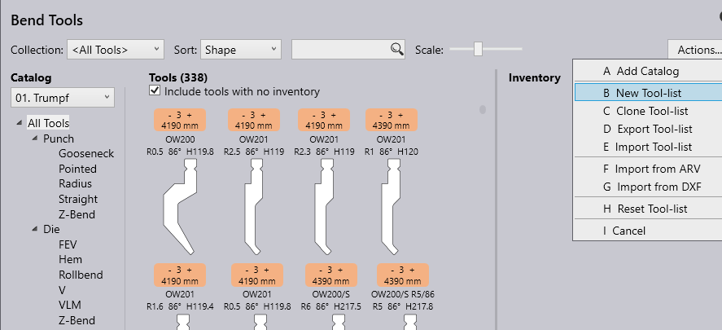
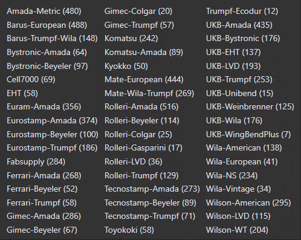

Gereedschap instellen
Alle berekeningen van benodigde geometrie-aanpassing evenals nesting en buig technologie van TruSmartCAM zijn gebaseerd op de state-of-the-art technologiemodules TecZone Fold en TecZone Laser. Om het hoogste niveau van precisie te bereiken moeten alle details van uw fysieke machines worden geconfigureerd.
Vooral bij buigtechnologie moeten alle bestaande gereedschappen bekend zijn bij het offline systeem. Alle gereedschappen voor de machines worden geconfigureerd in de TruSmartCAM Factory dialoog, maar zijn analoog aan de dialoog van de technologiemodules TecZone Fold en TecZone Laser.
| Raadpleeg de TecZone handleidingen om uw systeem te configureren. |

Catalogus opties
Door te klikken op de Catalog drop-down wordt eerst een lijst weergegeven van catalogi met gereedschappen die al actief zijn, samen met een lijst voor eventuele aangepaste gereedschappen en de mogelijkheid om een andere catalogus te installeren door te klikken op de Toevoegen knop.

Door te klikken op een catalogus in de beschikbare lijst wordt deze geïnstalleerd.
Verzameling
Bend Tool Inventory ondersteunt ook de optie om aangepaste verzameling(en) van gereedschappen te maken die specifiek kunnen zijn voor een bepaalde klant of kruiscatalogus waarbij meerdere catalogi in gebruik zijn
| Raadpleeg de TecZone Fold handleiding voor meer informatie |